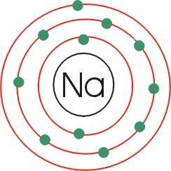

SODIO:

El sodio es un elemento químico de símbolo Na (del latín, natrium y de árabe natrun) número atómico 11, fue descubierto por Sir Humphry Davy. Es un metal alcalino blando, untuoso, de color plateado, muy abundante en la naturaleza, encontrándose en la sal marina y el mineral halita. Es muy reactivo, arde con llama amarilla, se oxida en presencia de oxigeno y reacciona violentamente con el agua.
El sodio está presente en grandes cantidades en el océano en forma ionica. También es un componente de muchos minerales y un elemento esencial para la vida.
 Ir a página principal
Ir a página principal